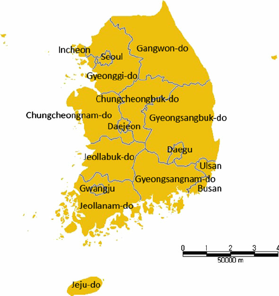

About South Korea

Jaydesite
Facts:
South Korea
South Korea, officially the Republic of Korea (ROK), is a country in East Asia. It constitutes the southern half of the Korean Peninsula, and borders North Korea along the Korean Demilitarized zone, with the Yellow Sea to the west and the Sea of Japan to the east. Like North Korea, South Korea claims to be the sole legitimate government of the entire peninsula and adjacent islands. South Korea, an East Asian nation on the southern half of the Korean Peninsula, shares one of the worlds most heavily militarized borders with North Korea. Its equally known for its green, hilly countryside dotted with cherry trees and centuries-old Buddhist temples, plus its coastal fishing villages, sub-tropical islands and high-tech cities such as Seoul, the capital. Like North Korea, South Korea claims to be the sole legitimate government of the entire peninsula and adjacent islands.
It has a population of about 52 million, of which half live in the Seoul Metropolitan Area, the ninth most populous metropolitan area in the world; other major cities include Busan, Daegu, and Incheon. The Republic of Korea Army (ROKA; Korean: 대한민국 육군; Hanja: 大韓民國陸軍; RR: Daehanminguk Yukgun), also known as the ROK Army or South Korean Army, is the army of South Korea, responsible for ground-based warfare. It is the largest of the military branches of the Republic of Korea Armed Forces with 365,000 members as of 2022. This size is maintained through conscription: All able-bodied South Korean males must complete military service (18 months for the army, auxiliary police, and marines, 20 months for the navy and conscripted firefighters, 21 months for the air force and social service, and 36 months for alternative service) between the ages of 18 and 35.
Capital:

Seoul
Seoul is geographically set in a mountainous and hilly terrain, with Bukhansan positioned on its northern edge. Within the Seoul Capital Area lie five UNESCO World Heritage Sites: Changdeokgung, Hwaseong Fortress, Jongmyo, Namhansanseong, and the Royal Tombs of the Joseon dynasty. Furthermore, Seoul has witnessed a surge in modern architectural development, with iconic landmarks including the N Seoul Tower, the 63 Building, the Lotte World Tower, the Dongdaemun Design Plaza, Lotte World, the Trade Tower, COEX, IFC Seoul, and Parc1. Seoul was named the World Design Capital in 2010 and has served as the national hub for the music, entertainment, and cultural industries that have propelled K-pop and the Korean Wave to international prominence.
Official language / Official script:

Official Korean language
Korean is the native language for about 81 million people, mostly of Korean descent. It's the national language of both North Korea and South Korea. In the south, the language is known as Hangugeo (South Korean: 한국어) and in the north, it is known as Chosŏnŏ (North Korean: 조선어). Since the turn of the 21st century, aspects of Korean popular culture have spread around the world through globalization and cultural exports. Beyond Korea, the language is recognized as a minority language in parts of China, namely Jilin, and specifically Yanbian Prefecture, and Changbai County. It is also spoken by Sakhalin Koreans in parts of Sakhalin, the Russian island just north of Japan, and by the Koryo-saram in parts of Central Asia. The language has a few extinct relatives which—along with the Jeju language (Jejuan) of Jeju Island and Korean itself—form the compact Koreanic language family. Even so, Jejuan and Korean are not mutually intelligible.
The linguistic homeland of Korean is suggested to be somewhere in contemporary Manchuria. The hierarchy of the society from which the language originates deeply influences the language, leading to a system of speech levels and honorifics indicative of the formality of any given situation. Modern Korean is written in the Korean script (한글; Hangeul in South Korea, 조선글; Chosŏn'gŭl in North Korea), an alphabet system developed during the 15th century for that purpose, although it did not become the primary script until the mid 20th century (Hanja and mixed script were the primary script until then). The script uses 24 basic letters (jamo) and 27 complex letters formed from the basic ones.
Official Korean script
An official script is a writing system, that is specifically designated to be official in the constitutions or other applicable laws of countries, states, and other jurisdictions. Akin to an official language, an official script is much rarer. It is used primarily where an official language is in practice written with two or more scripts. As, in these languages, use of script often has cultural or political connotations, proclamation of an official script is sometimes criticized as having a goal of influencing culture or politics or both. Desired effects also may include easing education, communication and some other aspects of life.
Health status / Area / Population:
Health status
Life expectancy has been rising rapidly and South Korea ranked 3rd in the world for life expectancy (previously 11th in 2016[2]). South Korea has among the lowest HIV/AIDS adult prevalence rate in the world, with just 0.1% of the population being infected, significantly lower than the U.S. at 0.6%, France's 0.4%, and the UK's 0.3% prevalence rate. South Korea has a good influenza vaccination rate, with a total of 43.5% of the population being vaccinated in 2019 (80.8% of people over 65).
A new measure of expected human capital calculated for 195 countries from 1920 to 2016, defined for each birth cohort as the expected years lived from age 20 to 64 years and adjusted for educational attainment, learning or education quality, and functional health status was published by The Lancet in September 2018. South Korea had the sixth highest level of expected human capital with 26 health, education, and learning-adjusted expected years lived between age 20 and 64 years. Obesity has been consistently among the world's lowest - only 3% of the population were obese, which was the second lowest in the OECD, compared to over 30% in the U.S. or 23% in the UK. As a result, mortality from cardiovascular disease was the fourth lowest in the OECD.
South Korea area
South Korea is located in East Asia, on the southern portion of the Korean Peninsula located out from the far east of the Asian landmass. The only country that shares a land border with South Korea is North Korea, lying to the north with 238 kilometres (148 mi) of the border running along the Korean Demilitarized Zone. South Korea is mostly surrounded by water and has 2,413 kilometres (1,499 mi) of coast line along three seas: to the west is the Yellow Sea (called Sohae Korean: 서해; Hanja: 西海; in South Korea, literally means west sea), to the south is the East China Sea, and to the east is the Sea of Japan (called Donghae Korean: 동해; Hanja: 東海; in South Korea, literally means east sea). Geographically, South Korea's landmass is approximately 100,364 square kilometres (38,751 sq mi). 290 square kilometres (110 sq mi) of South Korea are occupied by water. The approximate coordinates are 37° North, 128° East.

South Korea population
South Korea's population peaked at about 51 million people. However, in recent years the total fertility rate (TFR) of South Korea has plummeted, leading some researchers to suggest that if current trends continue, the country's population will shrink to approximately 28 million people by the end of the 21st century. Estimated 325,000 babies for the year, causing the country to achieve the lowest birth rate in the world. In a further indication of South Korea's dramatic decline in fertility, a variety of different Asian people had migrated to the Korean Peninsula in past centuries, however few have remained permanently.
A highly homogenous nation, but has in recent decades become home to a number of foreign residents (4.37%), whereas North Korea has not experienced this trend. However, many of them are ethnic Koreans with a foreign citizenship. Many residents from China, post-Soviet states, the United States and Japan are, in fact, repatriated ethnic Koreans (labelled "Overseas Koreans") who may meet criteria for expedited acquisition of South Korean citizenship. For example, migrants from China (PRC) make up 56.5% of foreign nationals, but approximately 70% of the Chinese citizens in Korea are Joseonjok (조선족), PRC citizens of Korean ethnicity. As of 2023, the total population of Korea is estimated to be 77.9 million, which includes the population of North Korea.
Currency:
Korean won
The South Korean won, sometimes known as the Republic of Korea won (symbol: ₩; code: KRW; Korean: 대한민국 원), is the official currency of South Korea. A single won is divided into 100 jeon, the monetary subunit. The jeon is no longer used for everyday transactions, and it appears only in foreign exchange rates. The currency is issued by the Bank of Korea, based in the capital city of Seoul.
Time / Date / Call / Internet:
Time zone
South Korea has one time zone, Korea Standard Time (UTC+9), which is abbreviated KST. South Korea currently does not observe daylight saving time. From May 8 to October 9 in 1988, daylight saving time was tested to better accommodate the calendar of competitions held during the 1988 Summer Olympics in Seoul. Both the 12-hour and 24-hour notations are widely used in South Korea. 12-hour clock is predominantly used in informal daily life, and the ante/post-meridiem indicator is often omitted where doing so does not introduce ambiguity. Half past the hour is commonly—especially in spoken Korean—abbreviated as 반 ban, which literally means “half”; for example, 13:30 is either expressed as “오후 1시 30분” or “오후 1시 반”. When the time is expressed in the HH:MM:SS notation, the Roman ante/post-meridiem indicators (AM and PM) are also used frequently.
In addition, they sometimes follow the convention of writing the Korean-style indicator before the time; it is not uncommon to encounter times expressed in such a way, e.g., “AM 9:18” instead of “9:18 AM”. Two words, 정오 jeong-o and 자정 jajeong, are sometimes used to indicate 12:00 and 0:00 respectively—much in the same way the English words noon and midnight are used. The 24-hour notation is more commonly used in text and is written "14:05" or "14시 5분". Examples include railway timetables, plane departure and landing timings, and TV schedules. In movie theaters it is also not uncommon to see something like 25:30 for the 01:30 AM movie.
The date
The most formal manner of expressing the full date and/or time in South Korea is to suffix each of the year, month, day, ante/post-meridiem indicator, hour, minute and second (in this order, i.e. with larger units first) with the corresponding unit and separating each with a space: 년 (年) nyeon for year; 월 (月) wol for month; 일 (日) il for day; 오전 (午前) ojeon for a.m.; 오후 (午後) ohu for p.m.; 시 (時) si for hour; 분 (分) bun for minute; and 초 (秒) cho for second. For example, the ISO 8601 timestamp 1975-07-14 09:18:32 would be written as “1975년 7월 14일 오전 9시 18분 32초”.
The same rules apply when expressing the date or the time alone, e.g., “1975년 7월 14일”, “1975년 7월”, “7월 14일”, “14일 오전 9시 18분” and “오전 9시 18분 32초”. The national standard (KS X ISO8601, formerly KSX1511) also recognizes the ISO-8601-compliant date/time format of YYYY-MM-DD HH:MM:SS, which is widely used in computing and on the Korean internet. In written documents, the date form above (but not the time) is often abbreviated by replacing each unit suffix with a single period; for example, 2001년 11월 29 일 would be abbreviated as “1975. 7. 14.” (note the trailing period and intervening spaces).
Calling
International call out: 00N (where N is the carrier code) followed by the distant country code and telephone number. Calling into Korea: +82 XX XXXX YYYY. The leading "0" is dropped when dialling into South Korea from abroad. Some 1566/1577/1588 telephone numbers cannot be dialed from abroad. Domestic long-distance call: 0NN (where NN is the carrier code) followed by the 0XX area code and XXXX YYYY number. See Domestic long-distance service code and Area code. Call to cellular : 01N XXXX YYYY (see Mobile phone number). When phone call is made between unified 010-number subscribers, leading 010 can be dropped (XXXX YYYY). Special service call : 0N0 XXXX YYYY (see Special service).
For example;
Call 02-312-3456 within Seoul: 312-3456
Call 02-312-3456 from elsewhere: 02-312-3456
Call 051-212-3456 within Busan: 212-3456
Call 051-212-3456 from elsewhere: 051-212-3456
Call 02-312-3456 from abroad: +82-2-312-3456
South Korea uses an open dialing plan with a total length (including 0)
of 9 to 11 digits and, within city, subscriber numbers 7 to 8 digits long.
Dialing from mobile phones to any type of phone except 010 numbers, the area code must be included.
In 1998, telephone numbers in Seoul starting with 2 and 6 added more digit
(02-2XX-YYYY to 02-22XX-YYYY, 02-6XX-YYYY to 02-26XX-YYYY).
Before area codes were shortened from 4 digit to 2~3 digit in June 2000,
there were 1 digit exchange number (usually "2")
with some 2 digit exchange numbers so some phone numbers like 0347-61-XXXX, 0443-2-XXXX or 0525-40-XXXX existed.
(now 031-761-XXXX, 043-652-XXXX and 055-340-XXXX)
Understand what type of food or drink, that is in South Korea.
And what type of food is at the street food station in South Korea. Understand what type of some structures, that is in South Korea. Understand what type of traditions, culture, and traditional paintings that is in South Korea. Foods:
Structures:
Traditional / Culture and Paintings: